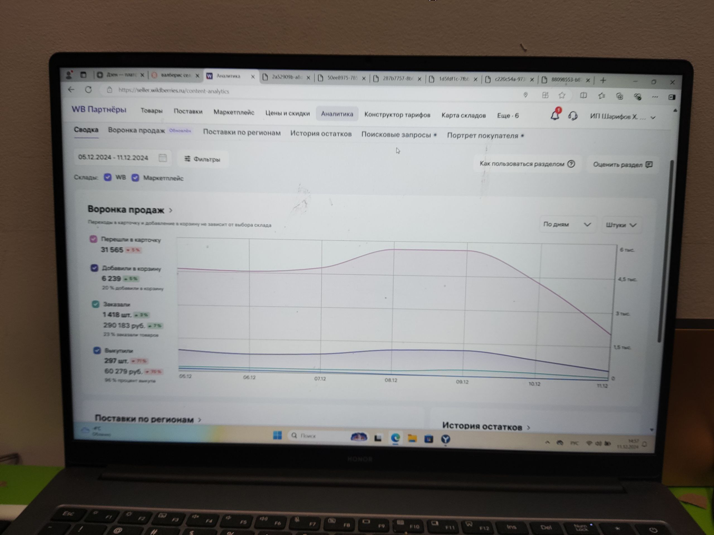
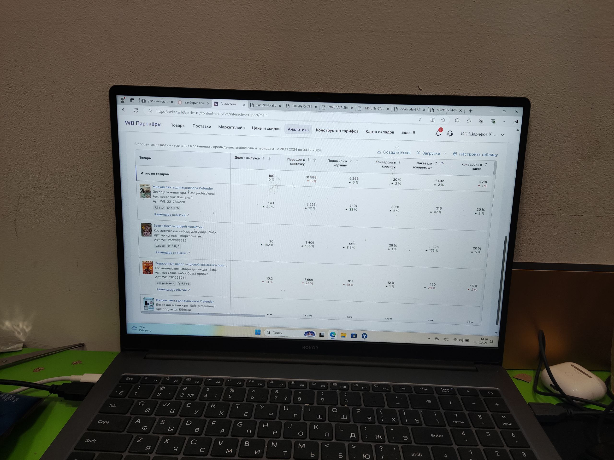
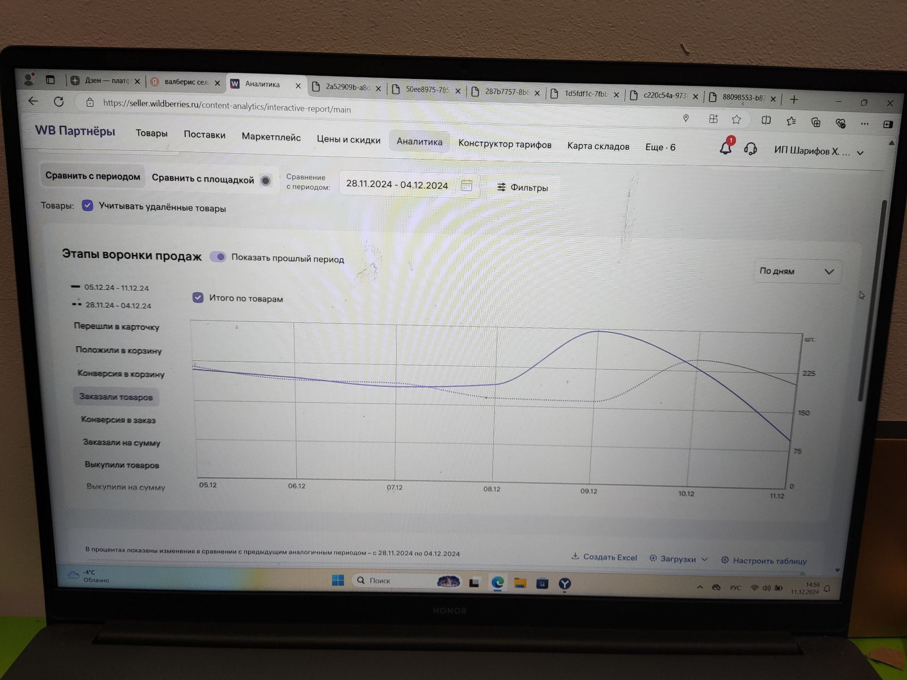

О компании
Ganich - это компания, специализирующаяся на продаже товаров для красоты на платформе Wildberries. Я имел возможность пройти практику в этой компании, где узнал много нового о маркетинге и продажах.
Мои задачи
Во время практики я занимался:
- В основном анализом рынка


